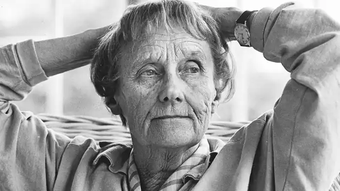
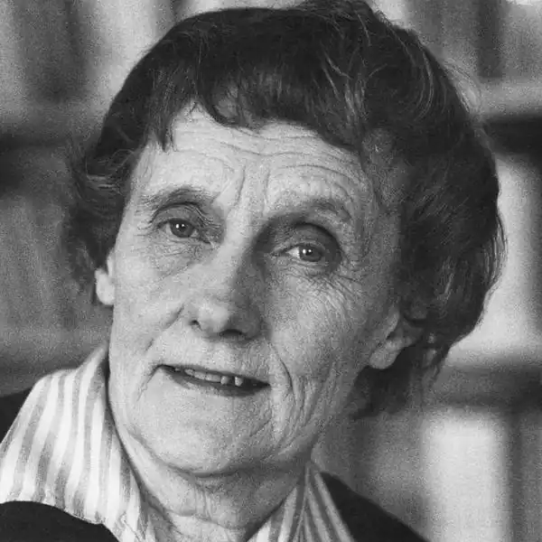
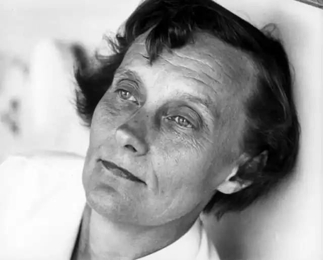
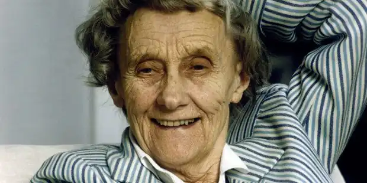
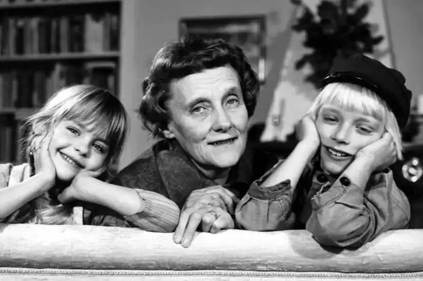

ЛІНДҐРЕН, Астрід (Lindgren, Astrid — 14.02.1907, Віммербю — 28.01.2002, Стокгольм) — шведська письменниця.Ліндґрен народилася в сім'ї землеробів "у старовинному червоному домі в глибині яблуневого саду". Ще в школі їй пророкували майбутнє письменниці, називаючи "Седьмою Лаґерлеф з Віммербю"; вона дала собі слово не писати, аби не бути на когось схожою. У 1941 р. захворіла її донька і, коли мати вичерпала ввесь запас історій, попросила, вигадавши зненацька дивне ім'я: "Розкажи мені про Пеппі Довгупанчоху". Незвичне ім'я змусило вигадати і саму незвичну героїню. Але видавати історію Ліндґрен не поспішала. У 1944 р. захворіла вона сама і опрацювала свої усні оповідання, подарувавши один примірник доньці, а другий надіславши у видавництво. Як і сподівалася Ліндґрен, видавництво, шоковане незвичайним характером і здібностями героїні, котра може підняти однією рукою коня і з'їсти за раз цілий торт, а, крім того, глузує з благодійників і загалом веде себе дивно, відхилило рукопис. Але 1945 р. Ліндґрен отримала премію за книгу "Бритт-Марі облегшує серце" ("Britt-Mari lattar sitt hjarta"), тоді наступного року видали і перероблений варіант "Пеппі". "Пригоди знаменитого слідчого Калле Блюмквіста"(1946) стали наступною книгою, знову відзначеною премією. Ліндґрен стала професійною письменницею. Вона вважала, що дитинство дало їй той матеріал, який потім увійшов до її творів. Волоцюги, які неодноразово просилися на нічліг до її батьків, змусили її замислитися вже в дитинстві, що не у всіх людей є свій дах, їхні оповідки розширювали її світогляд, вчили бачити, що світ населений не лише хорошими людьми. Тема боротьби добра і зла, одна з провідних у її творах, народилася вже тоді. Письменниця вважала, що "не можна сидіти і вигадувати якісь історії. Слід поринути у своє власне дитинство". Лише тоді можна написати те, що пробудить фантазію дитини. А це вона вважала найважливішим завданням літератури, лише їй притаманним, адже ні кіно, ні телебачення не залишають простору для уяви. Уява ж, цілком слушно вважала Ліндґрен, — найважливіша здатність людства, "адже все велике, що коли-небудь постало в цьому світі, народжувалося спершу в людській уяві". Крім того, книга для дітей повинна розвивати віру дітей у здатність творити дива, в саме існування див. Але дива у творах Ліндґрен завжди народжуються із самої реальності, як в історії про Малюка та Карлсона, котрий живе на даху.
Найвизначніші твори Ліндґрен — це казки-повісті: "Пеппі Довгапанчоха" ("Boken om Pippi Langs-trump", 1945-1946), "Міо, мій Міо" (1954), "Малюк і Карлсон, який живе на даxy" ("Lillebror och Karlsson pa Taket", 1955 — 1968), "Брати Левине Серце" ("Brodema Lejon-hjarta", 1973), а також повісті для дітей та юнацтва: "Пригоди знаменитого слідчого Калле Блюмквіста" ("Masterdetektiven Blomqvist lever farligt", 1946—1953), "Расмус-волоцюга" ("Rasmus pa Luffen", 1956) і трилогія про Еміля з Леннеберга ("Emil in Lonneberga", 1963—1970). Ліндґрен не висловлювала відкрито своєї програми, але прагла своєю творчістю сприяти демократизації суспільних відносин, хотіла бачити світ без війни, де не страждатимуть діти. Вона писала для дітей, і тому її ідеї набувають форми, доступної для дитячого розуміння. Так, у казці-повісті "Міо, мій Міо!" герой виступає проти злого рицаря Като, а брати Левине Серце борються проти тирана Тенгіля. У творах Ліндґрен, де використовується середньовічний реквізит, йдеться не лише про одвічну боротьбу добра і зла, як в усіх казках всіх часів. У рисах супротивників позитивних героїв письменниці та в описах країн, якими вони правлять, явно проступають риси фашизму, а самі персонажі схожі на сучасних шведів.
Специфіка казкової майстерності Ліндґрен полягає в тому, що вона створювала оповідання-казки, повісті-казки, де реальні сучасні хлопчики та дівчатка раптом набувають казкових властивостей, як бідна, занедбана дівчинка Пеппі, або живуть подвійним життям у звичайному місті Швеції XX ст. з телефоном, відвідуванням школи, як Малюк; з бідністю та злигоднями, як брати Левине Серце; із сирітством, як Міо; водночас у них є другий світ — казковий, фантастичний. Тут вони або могутні та героїчні самі (Міо, брати Левине Серце), або можуть мати наділених надприродними силами помічників і друзів, як Малюк, приятелем якого стає Карлсон. Казкові герої минулого літали на килимах-літаках, у летючих скринях тощо. Діти XX ст., знайомі з літальними апаратами нашого часу, вигадують двигунці, пропелери, кнопки керування. Сама фантастика Ліндґрен — це світ, створюваний уявою сучасної їй дитини. Витівки Карлсона, приміром, — це пустощі, яких багнеться звичайній дитині з розвиненою фантазією. Ліндґрен ніколи не моралізує. Вона змушує своїх маленьких читачів побачити погане на доступних їм прикладах. М'який гумор письменниці створює особливу добру атмосферу, де не залишається можливості для торжества злого первня. Неминучість остаточної перемоги добра притаманна і повістям Ліндґрен для юнацтва, а їхні герої — такі ж фантазери, як і герої казок. Калле Блюмквіст уявляє себе знаменитим слідчим, грається зі своїми друзями у війну Червоної та Білої троянд. Расмус-волоцюга ідеалізує життя бездомних злидарів. Ліндґрен у повістях про реальні події теж виховує своїх читачів: війна Червоної та Білої троянд ведеться між друзями за правилами високо трактованого рицарства, вона сповнена невичерпної винахідливості підлітків, руйнує станові перешкоди; Расмус розуміє істинну сутність волоцюг. Однак Ліндґрен не відмовилася від тролів, ельфів, домовиків чи одухотворення сил природи, гір чи предметів, але це традиційно фантастичне поєднується в неї зі зміною реальності дитячою фантазією. У своїх казках Ліндґрен ішла за Г.К. Андерсеном, котрий умів розповідати дивовижні історії про найпрозаїчніші предмети, за С.Лагерлеф, котра поєднувала в одному творі підручник про природу Швеції, реальне життя маленького хлопчика Нільса та історію гусячої зграї. Однак вона не повторює своїх попередників. Ліндґрен, вводячи читача в коло фантазій та емоцій дитини, вчить дорослих поважати її внутрішній світ, бачити в ній особистість. П'єси Ліндґрен "Пеппі Довгапанчоха", "Малюк і Карлсон", "Ковбаска, Буманта інші "йдуть на українській сцені (Чернігів, Харків, Київ та ін.). Окремі твори Ліндґрен переклала О. Сенюк. Г. Храповицька